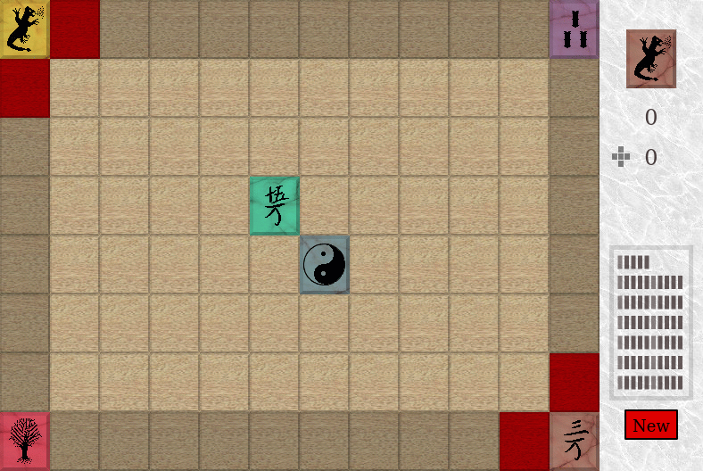

HTML 5 based board game with TypeScript
A long, long time ago (to be precise: in the year 2000 AD) I wrote a C++/KDE version of the boardgame Ishido and you can still find my website for this game conserved at the wayback machine: kishido
This little game was even published on CD in a Japanese Linux magazine and I still own the copy they sent to me. Another funny story: In 2006 I was contacted by a programmer who wanted to use my graphics in a Palm Pilot version of this game and you can still find it at https://sourceforge.net/projects/palmishido. And I’m still joking about my “programmer artwork”, but I still can’t afford a graphic designer for my hobby projects and looks like some people even like my artwork :-)
And this leads us to the topic of this blog: I ported this game to HTML5/TypeScript and it was great to see how technology advanced in the last 20 years! And I had a lot of fun too and thought it would be interesting to share my insights with you.
Setting the stage
I initially considered to port the C++ code to TypeScript, but then I thought it would be more fun to start from scratch. At this stage, I also decided to ditch the old object-oriented model and instead go with the more functional approach.

Modeling the game and the board
Since I didn’t want to use an object-oriented approach, I decided to use tagged unions to model the tiles on the board. And to enforce this idea further, I didn’t use the similar interface construct and instead settled on using the type construct instead.
I started with defining a union Tile type, which is either an EmptyTile or a Stone:
type Tile = EmptyTile | Stone
type EmptyTile = {
type: "empty"
}
type Stone = {
type: "stone",
symbol: number,
color: number
}
And these two Tile subtypes have a type discriminator and this allows the typescript compile to infer the correct type in switch or if statements if they check the value of the type discriminator.
And these types then allowed me to model the Board and the Game with the following type definition:
type Board = {
background: number[][]
tiles: Tile[][]
nextStone?: Stone
}
type Game = {
board: Board
stoneStack: Stone[]
validPositions: Position2D[]
score: number
fourWays: number
showHint: boolean
assets: Assets
}
And as I said earlier, I didn’t use any fancy libraries and instead used arrays as stacks. And two-dimensional arrays in column first order to model the board itself.
For checking the valid positions for a given stone I again used a tagged union type:
type MatchResult = NotMatching | Match
type NotMatching = {
type: 'NotMatching'
}
type Match = {
type: 'Match'
colorMatches: number
symbolMatches: number
}
function match(s1: Stone, s2: Tile): MatchResult {
if (s2.type == 'empty') {
return {
type: 'Match',
colorMatches: 0,
symbolMatches: 0,
}
}
const colorMatch = s1.color === s2.color
const symbolMatch = s1.symbol === s2.symbol
if (colorMatch || symbolMatch) {
return {
type: 'Match',
colorMatches: colorMatch ? 1 : 0,
symbolMatches: symbolMatch ? 1 : 0,
}
}
return {
type: 'NotMatching',
}
}
function getMatchResults(board: Board, position: Position2D) {
const {nextStone, tiles} = board
const {x, y} = position
const matchResults: MatchResult[] = []
if (nextStone) {
if (tiles[x][y].type === 'empty') {
if (x > 0) {
const left = tiles[x - 1][y]
matchResults.push(match(nextStone, left))
}
if (x < BOARD_WIDTH - 1) {
const right = tiles[x + 1][y]
matchResults.push(match(nextStone, right))
}
if (y > 0) {
const top = tiles[x][y - 1]
matchResults.push(match(nextStone, top))
}
if (y < BOARD_HEIGHT - 1) {
const bottom = tiles[x][y + 1]
matchResults.push(match(nextStone, bottom))
}
}
}
return matchResults
}
And the game then mainly consists of an event handling function which calls functions to change the state of the game and then simply redraws the whole board. And since it’s the year 2020 now, no further optimizations were needed to make the game as enjoyable as in 2000!
Drawing the board
I started by extracting the graphic from the tar archive I found on the wayback machine. As a side note: I created the graphics in 2000 with gimp and I can still successfully open them with the latest gimp version! You can see the game assets here: assets
As you can see there, I created all variations of the stones and variations of the board tiles (with red highlighted versions for giving the player “subtle” placement hints) in separate files. These images use the png format with 8-bit indexed mode. The png format wasn’t supported by most browsers in 2000, but today every browser supports the png format. That means that we can use these images directly by creating an image html element and setting the src attribute to the file name. And since I like to use the promise based async/await feature with TypeScript, I ended up with this code for loading the images:
function loadImage(src: string): Promise<HTMLImageElement> {
return new Promise((resolve, reject) => {
const image = new Image()
image.addEventListener('load', _ => resolve(image))
image.addEventListener('error', _ => reject(new Error(`Failed to load image ${src}`)))
image.src = src
})
}
This then allowed me to use a canvas html element with a fixed size of the old game resolution of 788x528 pixels:
<!DOCTYPE html>
<header>
<title>Ishido</title>
<meta http-equiv="Content-Type" content="text/html; charset=utf-8" />
<script type="text/javascript" src="index.js"></script>
</header>
<body>
<h1>Ishido</h1>
<canvas id="ishido" width="788" height="528"></canvas>
</body>
This very odd size was a side effect of me using a CRT monitor with a maximum resolution of 800x600 at that time. If you then subtract the windows borders and menu size, you end up with that graphic size.
And since my plan was to avoid using any additional library, I then started with the following init function:
async function initGame() {
const canvas = document.getElementById('ishido')
const ctx = canvas.getContext('2d')
if (!ctx) {
alert("Your browser isn't supported by this game!")
return
}
}
When I then started to play around with the ctx graphics context, Visual Studio Code suggested me to add the following to my tsconfig.json file:
{
"compilerOptions": {
"lib": [
"dom"
]
}
}
And this then allowed me to leverage the correct dom types and made it much easier to explore the HTML5 graphic context api. For drawing the board I then just had to use the drawImage method on the canvas html element. I then ended up with the following function to draw the board:
function drawStone(ctx: CanvasRenderingContext2D, tileset: HTMLImageElement, stone: Stone, position: Position2D) {
const {color, symbol} = stone
const tileX = color * TILE_WIDTH
const tileY = symbol * TILE_HEIGHT
const {x, y} = position
ctx.drawImage(tileset,
tileX, tileY, TILE_WIDTH, TILE_HEIGHT,
x, y, TILE_WIDTH, TILE_HEIGHT)
}
function draw(ctx: CanvasRenderingContext2D, game: Game) {
const hintPositions = game.showHint ? game.validPositions : []
const {board, assets} = game
for (let x = 0; x < BOARD_WIDTH; x++) {
for (let y = 0; y < BOARD_HEIGHT; y++) {
const tile = board.tiles[x][y]
const pos = {x, y}
switch (tile.type) {
case 'empty': {
const background = board.background[x][y]
const hintY = hintPositions.find(equals(pos))
? TILE_HEIGHT * 2 : 0
const tileY = isBeyond(pos) ? 0 : TILE_HEIGHT
ctx.drawImage(
assets.background,
background * TILE_WIDTH,
hintY + tileY,
TILE_WIDTH,
TILE_HEIGHT,
x * TILE_WIDTH,
y * TILE_HEIGHT,
TILE_WIDTH,
TILE_HEIGHT
)
break
}
case 'stone': {
drawStone(ctx, assets.tileset, tile,
{x: x * TILE_WIDTH, y: y * TILE_HEIGHT})
break
}
}
}
}
}
This function provides type-safe access to the Stone properties because the typescript compiler can infer the correct type based on the switch statement. This makes it quite easy to write this function.
But the draw function is a bit more complicated because the background tiles are initialized with random numbers to give the board more variation. And the game also provides a hint feature, which highlights the valid positions on the board with background tiles highlighted with a red tint.
Conclusion
It took me a few evenings to port this old game to run in a web browser. I had a lot of fun writing the code and using typescript made it much easier for me to discover the canvas API. Since I didn’t have to care about memory management and didn’t split my source code into modules, implementing this game was very quick and fun too. And the code is much smaller than the original C++ source code! And smaller code means that the code is much easier to read. And since the game is so easy and small, I even didn’t write any tests for it!
That’s how most software was written in the early 2000s: No automatic tests and if you were lucky, someone introduced a version management system like CVS to your project. git or github didn’t exist at that time! And I was very lucky that I had an extreme programming training at my first job in 2001 and since then I’m a big advocate of developers writing their tests!
You can find the whole source code for this game here: https://github.com/katmatt/ishido and the game logic is contained in this file index.ts
And without further ado, here is the resulting game and I hope you enjoy playing it too!